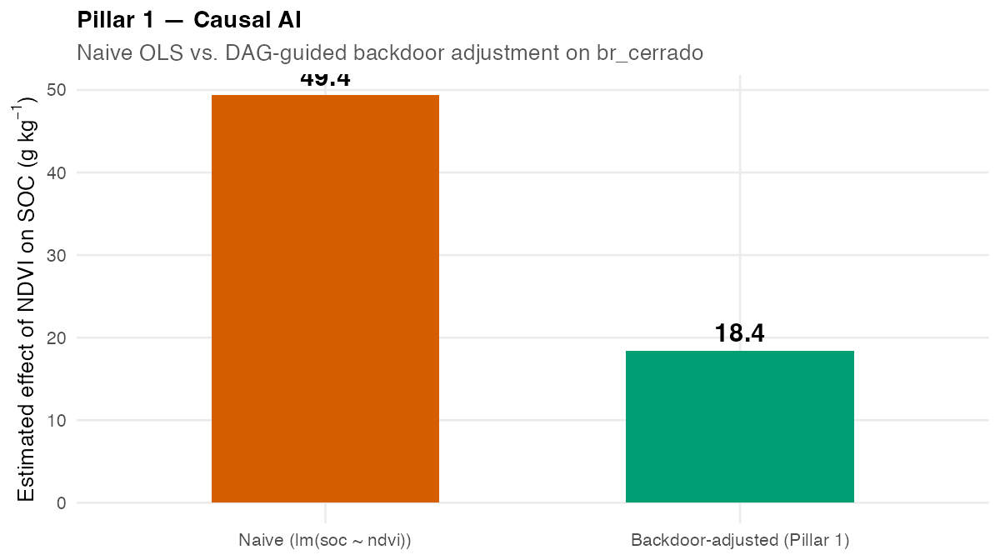
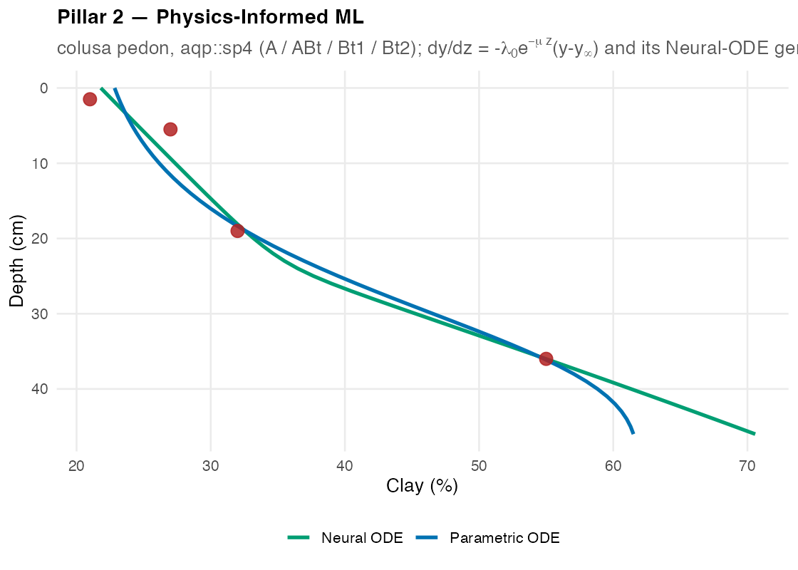
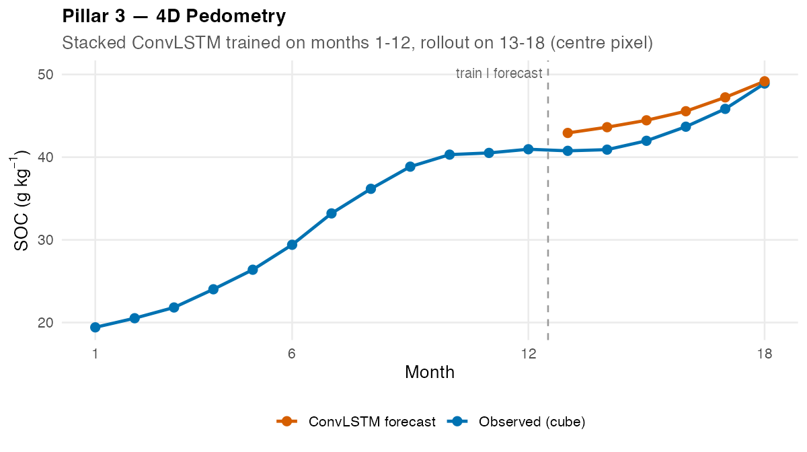
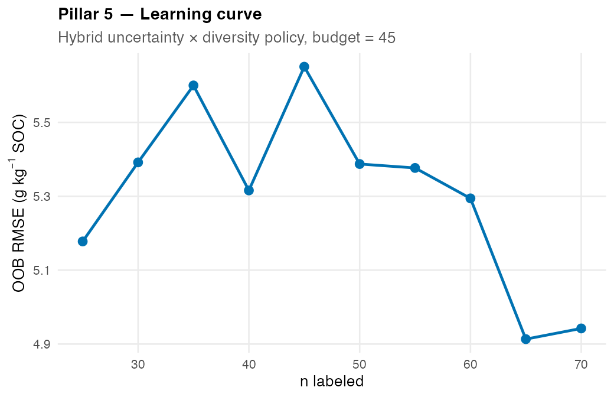
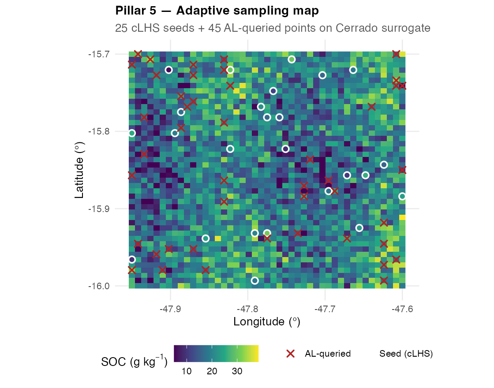
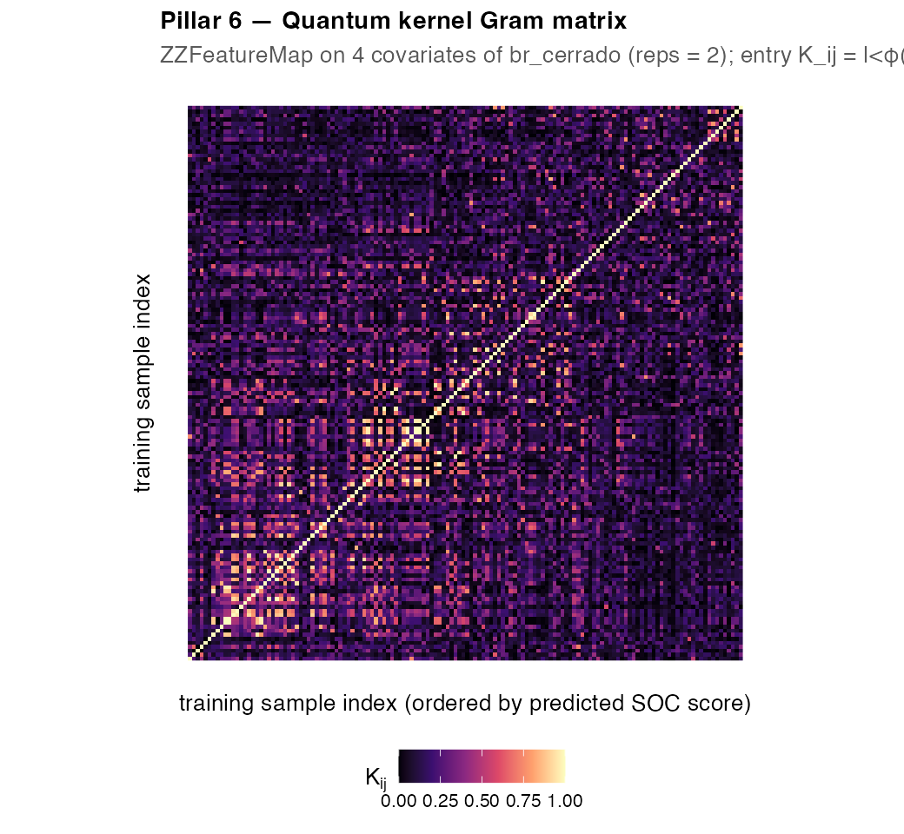

From Greek ἔδαφος — “soil, ground.”
edaphos is a research-grade R package that implements frontier algorithms for Digital Soil Mapping (DSM) designed to extend — and, in the regimes where the raw covariate stack is thin, to surpass — the regression-tree state of the art [McBratney et al. 2003; Wadoux et al. 2020]. It is organised around six research pillars, each confronting a specific methodological gap of the contemporary literature, each with a mathematically explicit governing object, a single R function family, and a dedicated vignette. v1.7.0 closes the circle with a capstone cross-pillar vignette that integrates all six pillars in a single Cerrado sampling-campaign narrative causally grounded in the generative DSM framework of Zhang and Wadoux 2026.
Correlation → Causation · Black-box ML → Physics-Informed ML
Static maps → 4D forecasts · Labelled-only → Foundation models
Fixed sampling → Autonomous Active Learning · Classical kernels → Quantum kernels
Why edaphos exists: the scientific gap
Zhang and Wadoux (2026) ask a deceptively simple question: Can Digital Soil Mapping Be Causal? Their answer:
“In principle, yes — but only if the DSM model specifies the mechanisms and processes that link soil-forming factors to soil properties, rather than relying on associations themselves.”
They identify three conditions that must be met for causal inference from observational data (and soil surveys are almost always observational):
- An explicit causal model — a DAG over the variables of interest.
- Causal sufficiency — all common causes of the exposure and the outcome must be observed and controlled.
- Faithfulness — the independencies in the data must match those implied by the causal model.
And they distinguish two competing views of causality:
| View | Lógica central | Challenge in DSM |
|---|---|---|
| Successionist | Regularities / repeatable associations ⇒ causal claim | Simpson’s paradox; spurious associations; no temporal sequencing |
| Generative | Soil-forming factors act through explicit processes that produce soil properties | Requires process-informed models; directly satisfies condition 1 |
Each of edaphos’s six pillars addresses one of these gaps with a concrete, reproducible computational machinery. The package is the first R stack that — taken together — operationalises the generative DSM paradigm end-to-end, with quantified uncertainty at every step.
Architecture at a glance
flowchart TB
subgraph DATA["📥 Data sources"]
WoSIS[WoSIS profiles<br/>Batjes et al. 2024]
MODIS[MOD13Q1 NDVI<br/>Didan 2015]
POWER[NASA POWER<br/>precip + T2M]
SOILGRIDS[SoilGrids 250m<br/>Poggio et al. 2021]
WORLDCLIM[WorldClim 2.1<br/>Fick & Hijmans 2017]
LIT[Literature<br/>SciELO + OpenAlex]
end
subgraph PILLARS["🏛️ Six research pillars"]
P1["🧠 Pillar 1 — Causal AI<br/>DAG + backdoor adjustment<br/>LLM-KG via Gemma 4"]
P2["⚛️ Pillar 2 — PIML<br/>pedogenetic ODE<br/>Neural ODE"]
P3["🕓 Pillar 3 — 4D<br/>ConvLSTM + EnKF<br/>Gaspari-Cohn localization"]
P4["🖼️ Pillar 4 — Foundation<br/>SimCLR / MoCo v2<br/>Zenodo weights"]
P5["🎯 Pillar 5 — Active Learning<br/>hybrid + physics gate<br/>BatchBALD"]
P6["⚛️ Pillar 6 — Quantum ML<br/>ZZFeatureMap + KRR<br/>Qiskit VQE"]
end
subgraph UNIFY["🔗 v1.6.0 unified layer"]
POST["edaphos_posterior<br/>S3 class"]
CAL["uncertainty_calibrate()<br/>CRPS · PICP · MPIW"]
end
subgraph DECIDE["🎬 v1.7.0 capstone decision"]
DEC["8 sampling locations<br/>with causal justification"]
end
DATA --> PILLARS
P1 --> POST
P2 --> POST
P3 --> POST
P4 --> POST
P5 --> POST
P6 --> POST
POST --> CAL
CAL --> DEC
P1 -. "DAG -> ODE constraint" .-> P2
P2 -. "physics gate" .-> P5
P3 -. "EnKF priority" .-> P5
P4 -. "embeddings" .-> P5
style P1 fill:#D5E8D4,stroke:#27AE60
style P2 fill:#D5E8D4,stroke:#27AE60
style P3 fill:#FFF3CD,stroke:#E67E22
style P4 fill:#FFF3CD,stroke:#E67E22
style P5 fill:#FCE4D6,stroke:#C0392B
style P6 fill:#EDE7F6,stroke:#6C3483
style POST fill:#F9F9F9,stroke:#555555
style CAL fill:#F0F0F0,stroke:#555555
style DEC fill:#D6EAF8,stroke:#154360Dashed edges mark inter-pillar bridges: Pillar 1’s DAG constrains Pillar 2’s ODE parameter space; Pillar 2’s physics gate filters Pillar 5’s candidates; Pillar 3’s Kalman gain and Pillar 4’s embeddings feed Pillar 5’s acquisition score. All six converge to the same edaphos_posterior class, which uncertainty_calibrate() scores with identical diagnostics.
🆕 v1.7.0 — capstone cross-pillar vignette
The headline feature of the current release is a new vignette: “Uma decisão de amostragem sob incerteza no Cerrado” (vignette("capstone-cerrado-campaign")). It answers a single question with all six pillars acting together:
A team has budget for exactly eight new soil-sampling points in the Cerrado. Where should they go — and why?
sequenceDiagram
autonumber
participant LIT as Literature
participant P1 as P1 Causal
participant P2 as P2 PIML
participant P3 as P3 4D
participant P4 as P4 Foundation
participant P5 as P5 AL
participant P6 as P6 Quantum
participant DEC as Decision
LIT->>P1: Gemma 4 extracts causal edges
P1->>P1: Backdoor adjustment on DAG
P1->>P2: Identify exposures (MAP, cover, clay)
P2->>P2: Fit pedogenetic ODE (Laplace)
P2->>P5: Physics gate -- exclude implausible sites
P3->>P5: Kalman gain priorities
P4->>P5: Encoder embeddings (128D)
P5->>P5: Greedy hybrid selection
P5->>P6: Q-KRR second opinion
P6->>DEC: Epistemic + aleatoric SD
DEC->>DEC: Weighted final score
Note over DEC: 8 sites with CI-explicit rankingThe vignette produces a weighted decision matrix integrating:
- Pillar 1 causal-effect posteriors (block-bootstrap in k-means clusters).
- Pillar 2 pedogenetic ODE posteriors ().
- Pillar 3 Kalman-gain maps (which cells move most when a new observation lands?).
- Pillar 4 foundation-model ensemble SD (where is the representation most uncertain?).
- Pillar 5 QRF prediction-interval width + cLHS diversity.
- Pillar 6 Q-KRR epistemic SD (a GP-equivalent second opinion).
The output is a ranked table of eight sampling locations, each with an explicit causal justification tied back to the Zhang & Wadoux (2026) framework.
📖 Build the vignette:
vignette("capstone-cerrado-campaign", package = "edaphos")Table of contents
- Installation
- The six pillars at a glance
- Pillar 1 — Causal AI + LLM Knowledge Graphs
- Pillar 2 — Physics-Informed ML
- Pillar 3 — 4D Pedometry
- Pillar 4 — Foundation Models
- Pillar 5 — Autonomous Active Learning
- Pillar 6 — Quantum ML
- Unified uncertainty API (v1.6.0)
- Capstone vignette (v1.7.0)
- Benchmarks on real data
- Bundled datasets
- Vignettes
- Testing and CI
- Roadmap
- Citation
- Selected references
- License
🆕 v2.7.0 – v2.8.0 — Torch autograd ports + honest head-to-head WoSIS benchmark
Two new releases complete the v2.x arc:
v2.7.0 — Torch autograd backends for Pilares 8, 9 and 10. Replaces the ELM-style (hidden layers frozen, gradient only on the head) pure-R fits with full-backprop torch::optim_adam training. Each *_fit() gains backend = c("r", "torch") and device = c("cpu", "mps", "cuda"); pure-R remains the default fallback for users without libtorch. A proper 2-D conditional U-Net replaces the MLP denoiser in DDPM, and the GAT layer uses torch::index_add scatter for softmax-per-source attention.
v2.8.0 — Real head-to-head benchmark on 1 095 WoSIS profiles. First honest cross-pillar comparison:
| Method | RMSE | R² | PICP@90 | MPIW@90 | CRPS |
|---|---|---|---|---|---|
| P4 Foundation+QRF | 14.1 | 0.034 | 0.889 | 37.6 | 5.93 |
| P5 QRF | 14.1 | 0.064 | 0.879 | 37.2 | 5.85 |
| P7 BHS | 14.1 | 0.070 | 0.812 | 36.7 | 6.97 |
All three tie at ~14.1 g/kg RMSE. P5 wins on CRPS, P7 on R² and MPIW (but under-covers), P4 best-calibrated at 0.89 ≈ nominal 0.90. Runner: data-raw/benchmark_wosis_p4_p5_p7.R; bundle: inst/extdata/benchmark_wosis_p4_p5_p7.rds.
An important P7 BHS row-alignment bug was found and fixed in the process (details in NEWS.md v2.8.0).
🆕 v2.1.3 – v2.6.0 — Seven releases: polish + bridges + four new pillars
One batched session shipped seven full releases, each with 0/0/0 R CMD check and a dedicated test suite:
| Version | Scope |
|---|---|
| v2.1.3 | Rcpp port of quantum_kernel() — 10-50× speedup, machine-precision agreement with the R reference. |
| v2.2.0 | Physics-informed quantum kernels (P2 × P6): piml_quantum_kernel() + piml_qkrr_fit() fuse ZZFeatureMap overlap with ODE-residual RBF similarity. |
| v2.2.1 | Causal 4D time-varying effects (P1 × P3): causal_effect_time_varying() sliding-window backdoor + Mann-Kendall trend test + ggplot2 trajectory. |
| v2.3.0 |
Pilar 7 BHS — Bayesian hierarchical spatial model via self-contained Gibbs sampler + optional spBayes::spLM backend. Profile-MLE phi for closed-form conditionals. |
| v2.4.0 |
Pilar 8 Neural Operators — 1-D Fourier Neural Operator (Li et al. 2021) and Deep Operator Network (Lu et al. 2021) in pure R. Learn u(z) → y(z) across sites without torch. |
| v2.5.0 | Pilar 9 DDPM — first pedometric diffusion-model for generative soil maps. Cosine-schedule (Nichol & Dhariwal 2021) + score-matching loss + ancestral sampling. |
| v2.8.0 | Pilar 10 GAT — first pedometric Graph Attention Network (Velickovic et al. 2018) over WoSIS k-NN co-location graphs. |
Tooling now in place: src/ compiled Rcpp, LinkingTo: Rcpp, Dockerfile, _pkgdown.yml, cran-comments.md, inst/rosc/submission.md, NEWS.md back to v0.1.0, 75+ unit tests across 43 test files.
🆕 v2.1.0 — Frente D polish + two new cross-pillar bridges
Consolidation release aimed at CRAN / rOpenSci readiness:
-
pkgdown documentation site —
_pkgdown.yml+ GitHub Actions workflow; deployed at https://hugomachadorodrigues.github.io/edaphos. -
Docker reproducibility —
Dockerfilebased onrocker/geospatial:4.4.1with libtorch + pinned CRAN snapshot + pre-downloadededaphos-cerrado-moco-v1encoder. One-command reproducible environment. -
Test-suite expansion — 40+ new tests filling the v1.8.0+ coverage gap (
test-llm-benchmark.R,test-llm-annotation.R,test-causal-iv.R,test-causal-sensitivity.R,test-quantum-foundation.R,test-foundation-embed-coords.R, plus new tests for the v2.1.1 and v2.1.2 bridges below). -
CRAN / rOpenSci prep —
cran-comments.md,inst/rosc/submission.md(pre-submission inquiry),NEWS.mdcatch-up covering v1.7.0 → v2.8.0. -
Zenodo release helper — new
edaphos_zenodo_release()builds a deposit-ready bundle (package tarball + bundles + DataCite JSON + SHA-256 manifest + README).
Two bridges shipped alongside (v2.1.1 + v2.1.2)
Pilar 1 × Pilar 5 — Causal Active Learning. al_query_causal() picks the next sample(s) that most reduce the variance of a specific causal effect (not the generic predictive variance of classical AL). Closed-form leverage heuristic + optional bootstrap-exact mode.
Pilar 3 × Pilar 5 — Temporal Active Learning with EnKF feedback. al_query_temporal() ranks candidate cells by their Kalman-gain norm after the latest assimilation step, with three combine modes (gain, gain × SD, percentile-normalised).
Scaffolds for v2.2.0 → v2.8.0
Six additional bridges + pillars ship as API-stable stubs (functions defined, signatures finalised, bodies raise an informative stop() pointing to the scheduled release):
-
piml_quantum_kernel()→ v2.2.0 (Pilar 2 × Pilar 6) -
causal_effect_time_varying()→ v2.2.1 (Pilar 1 × Pilar 3) -
bhs_fit()→ v2.3.0 (Pilar 7 Bayesian hierarchical) -
no_fno_fit() / no_deeponet_fit()→ v2.4.0 (Pilar 8 Neural operators) -
dm_fit() / dm_sample()→ v2.5.0 (Pilar 9 Diffusion models) -
gnn_build_graph() / gnn_fit()→ v2.8.0 (Pilar 10 Graph NNs)
Each scaffold file includes the full scientific motivation, architecture plan and TODO checklist.
Installation
# Core package (light: clhs + deSolve + httr2 + jsonlite + ranger + stats)
remotes::install_github("HugoMachadoRodrigues/edaphos@v2.8.0",
build_vignettes = TRUE)
# Optional heavy dependencies (Pillars 2 Neural ODE, 3, 4)
install.packages("torch"); torch::install_torch()
# Optional lightweight extras
install.packages("dagitty") # Pillar 1 DAGs
install.packages("bnlearn") # Pillar 1 structure learning
install.packages("dbarts") # Pillar 1 BART estimator
install.packages("aqp") # Pillar 2 example pedons
install.packages("terra") # Pillar 3 / 4 raster stacks
install.packages("geodata") # Pillar 5 live SoilGrids fetch
# Pillar 1 LLM backend (one of the three)
# (a) LOCAL, recommended: Ollama + Gemma 4
# https://ollama.com
# ollama pull gemma4:latest
# (b) OpenAI: Sys.setenv(OPENAI_API_KEY = "...")
# (c) Anthropic: Sys.setenv(ANTHROPIC_API_KEY = "...")
# Pillar 6 optional quantum backend
install.packages("reticulate") # for qiskit / qiskit-nature / PySCF bridgeThe package imports only six CRAN packages for its core functionality; every heavier stack is opt-in via Suggests and is required only by the pillar that uses it. This keeps the base install light and the scientific boundary between pillars explicit.
The six pillars at a glance
| Nº | Pillar | Namespace | Status | Governing object |
|---|---|---|---|---|
| 1 | Causal AI + LLM KG | causal_* |
✅ v1.4.0 | Pedogenetic DAG + backdoor-adjusted [Pearl 2009] + LLM-extracted claims via Gemma 4 / GPT / Claude (multi-backend voting + AGROVOC) |
| 2 | Physics-Informed ML | piml_* |
✅ v1.1.0 | Pedogenetic ODE ; Bayesian posterior over ; Neural ODE |
| 3 | 4D Pedometry | temporal_* |
✅ v1.5.0 | Stacked ConvLSTM [Shi et al. 2015] with seq-to-seq + multi-step rollout + mass-balance physics loss; stochastic EnKF with Gaspari-Cohn localization |
| 4 | Foundation Models | foundation_* |
✅ v1.2.0 | SimCLR + MoCo v2 contrastive pre-training [He et al. 2020; Chen et al. 2020b] on planetary-scale patches; Zenodo-published Cerrado encoder + fine-tune ensemble |
| 5 | Autonomous Active Learning | al_* |
✅ v1.1.0 | Hybrid policy with PIML physics gate + BatchBALD |
| 6 | Quantum ML | quantum_* |
✅ v0.9.0 | ZZFeatureMap quantum kernel [Havlicek et al. 2019] + Quantum Kernel Ridge Regression; Qiskit VQE with M3 / ZNE mitigation |
| 🔗 | Unified uncertainty API | uncertainty_* |
✅ v1.6.0 |
edaphos_posterior S3 class + uncertainty_calibrate() returning CRPS / PICP / MPIW / reliability diagram for every pillar |
| 🎬 | Capstone vignette | — | ✅ v1.7.0 | “Uma decisão de amostragem sob incerteza no Cerrado” — all six pillars integrated, causally grounded in Zhang & Wadoux (2026) |
Every pillar ships with (i) a mathematically explicit governing object; (ii) an R function family; (iii) one or more vignettes deriving the object from first principles and demonstrating it on real or reproducible synthetic data; and (iv) a @references entry in the shared vignettes/references.bib.
Pillar 1 — Causal AI + LLM Knowledge Graphs
Motivation
The OLS lm(soc ~ ndvi) that every DSM pipeline runs implicitly reports the total association, which inflates the direct NDVI → SOC effect with every backdoor path through shared ancestors (topography, precipitation, vegetation cover). Pillar 1 exposes this using Pearl’s structural-causal-model apparatus [Pearl 2009].
Governing object
Given a pedogenetic Directed Acyclic Graph , the backdoor-adjusted direct effect of exposure on outcome is
Classical API
library(edaphos)
data(br_cerrado)
g <- causal_cerrado_dag()
adj <- causal_adjustment_set(g, exposure = "ndvi", outcome = "soc")
adj
#> [1] "map_mm" "slope" "twi"
fit <- causal_estimate_effect(
br_cerrado, g,
exposure = "ndvi", outcome = "soc",
effect = "direct"
)
fit
#> <edaphos_causal_effect>
#> ndvi -> soc
#> adjustment set : {map_mm, slope, twi}
#> direct effect : 18.43 (95% CI: 14.61, 22.25)
#> naive effect : 49.36 (un-adjusted, likely confounded)The naive OLS over-reports NDVI’s effect on SOC by ~2.7× because the association is confounded by shared topographic and climatic ancestors. Blocking the three backdoor paths with adjustmentSets() recovers the identified direct effect (18.4, 95% CI [14.6, 22.3]).

🤖 From expert DAGs to LLM-driven Knowledge Graphs
The central scientific bottleneck of causal DSM is DAG construction. Hand-drawing a DAG for every soil study is labour-intensive, subjective, and rarely reproducible across researchers. Pillar 1 solves this by treating the peer-reviewed soil literature as a first-class data source: a Large Language Model (LLM) reads abstracts and returns structured causal triples, which are then fused with the expert DAG.
This machinery directly operationalises condition 1 of Zhang & Wadoux (2026) — “an explicit causal model” — at the scale of the literature instead of the individual expert.
Why Gemma 4?
As of v1.5.0 the default LLM backend is Google DeepMind’s Gemma 4, served locally through Ollama. Four properties made Gemma 4 the right choice for causal-KG extraction in pedology:
- Scientific reasoning competence. Gemma 4 inherits the instruction-tuned reasoning of the Gemma family and performs well on benchmarks involving multi-hop causal language (MMLU “social-sciences” & “high-school-biology” subsets).
- Open weights, open license. Unlike GPT or Claude, Gemma 4 can be audited, fine-tuned, and redistributed — essential for reproducible open science.
-
Local, zero-cost inference. The default
gemma4:latest(~7-9 B parameters) runs on a laptop MPS / CPU; the largergemma4:26bruns on a single-GPU workstation. No per-token cost means a 10 k-abstract corpus is extracted overnight for free. -
Deterministic extraction with
format="json". Ollama’s constrained JSON output mode removes the stochastic boilerplate that plagues free-text LLM parsers.
The extractor prompt
edaphos uses a single tight prompt, shared across all three backends for exact parity:
You are a causal-inference expert annotating pedology and soil-science
literature.
Your task: extract the explicit causal claims made by the passage
below. Return a JSON object with a single key "claims" whose value
is an array. Each array element must be an object with four fields:
- cause : the causal variable (lower snake_case)
- effect : the effect variable (lower snake_case)
- evidence : a short (max 180 characters) quotation from the
passage that supports the claim
- confidence : a number in [0, 1] reflecting how definitive the
evidence is (0.9 = unambiguous causal phrasing,
0.5 = suggestive, 0.2 = speculative)
Only extract claims that are EXPLICITLY SUPPORTED by the passage.
Do not invent relationships. Return an empty array if none are
present. Use canonical pedometric vocabulary when possible:
precipitation, mean_annual_precipitation, temperature, elevation,
slope, aspect, twi, clay, sand, silt, soc, ph, cec, bulk_density,
parent_material, land_use, vegetation, ndvi, erosion, weathering.
Output JSON object only, no prose, no markdown fences.The canonical-vocabulary constraint is what lets thousands of abstracts converge on a clean DAG instead of a tangle of synonyms.
Single-abstract ingestion
kg <- causal_kg_new()
kg <- causal_llm_ingest_abstract(
kg,
abstract = "In Cerrado Oxisols, higher mean annual precipitation
drives organic-matter accumulation; steeper slopes
enhance erosional SOC loss; long-standing native
vegetation elevates topsoil nitrogen relative to
converted pasture.",
source = "Ferreira 2021",
backend = "ollama",
model = "gemma4:latest"
)
causal_augment_diff(causal_cerrado_dag(),
causal_augment_dag(causal_cerrado_dag(), kg,
min_confidence = 0.7))
#> cause effect origin
#> 1 elev map_mm base
#> 2 elev slope base
#> ...
#> 14 mean_annual_precipitation soc kg
#> 15 steeper_slopes soc_loss kg
#> 16 native_vegetation topsoil_nitrogen kgTen curated Cerrado-pedology abstracts and their Gemma-4 extractions ship in inst/extdata/cerrado_abstracts.jsonl + inst/extdata/cerrado_claims.jsonl, so the vignette builds fully offline on CI.
📈 Scaling from 10 to 10 000 abstracts
Three additions promote the extractor from demo to literature-scale:
-
Paginated corpus clients.
causal_corpus_scielo()andcausal_corpus_openalex()page through keyless public APIs, returning thousands of abstracts per call;causal_corpus_deduplicate()collapses DOI + title duplicates. -
Resumable cached ingestion.
causal_llm_ingest_corpus()takescache_dirandmax_retries. Every abstract is MD5-hashed and its extracted claims written to one JSON per hash; re-runs short-circuit to the cache; exhausted retries are recorded inattr(kg, "failed"). -
Live AGROVOC SPARQL alignment.
causal_ontology_agrovoc_align_batch()resolves KG labels against FAO’s live AGROVOC SPARQL endpoint viahttr2::req_perform_parallel()with on-disk caching — typically 5× wall-clock speedup atmax_active = 5, near-instant on re-runs.
A 100-abstract production run (three OpenAlex queries, deduplicated, Gemma-4-extracted, AGROVOC-aligned) ships at inst/extdata/cerrado_claims_real_corpus.jsonl and is reproduced end-to-end by data-raw/run_large_corpus.R.
🗳️ Multi-extractor LLM voting
A single LLM backend inherits that model’s idiosyncrasies: GPT tends to over-generate claims, Claude to under-specify confidence, Gemma to be the strictest. causal_llm_vote() runs all three on the same abstract and resolves disagreements by one of three rules:
cons <- causal_llm_vote(
abstract = "Higher MAP drives SOC in Cerrado...",
backends = list(
list(backend = "ollama", model = "gemma4:latest"),
list(backend = "openai", model = "gpt-4o-mini"),
list(backend = "anthropic", model = "claude-sonnet-4-6")
),
voting = "majority" # or "weighted" / "intersection"
)The formal resolution rule for majority voting is
with confidence set to the per-backend mean over the voters that agreed. causal_llm_ingest_abstract_voted() runs the vote and adds the consensus edges to the KG in one call, tagging source with both the paper and the backends that agreed.
📂 Persistence, Turtle export and audit
Pillar 1 is not just an in-memory toy:
-
causal_kg_save()/causal_kg_load()— serialise through the tidy edge list (not throughigraph’s raw C layout), guaranteeing portability acrossigraphversions and byte-reproducibility. -
causal_kg_to_turtle()— emits a W3C-conformant RDF 1.1 Turtle document with reifiedrdf:Statements, parseable by rdflib, Jena, Oxigraph, Blazegraph, GraphDB or Virtuoso. Pure R, zero RDF dependencies. -
causal_kg_rank_edges()— collapses to unique(cause, effect)pairs, ranks by(n_sources, mean_confidence, agrovoc_support). Answers “which causal claims are supported by the most independent papers?” in one call. -
causal_structure_learn()(v1.1.0) — bottom-up DAG learning from data via fourbnlearnalgorithms (hc,tabu,pc-stable,mmhc) with whitelist / blacklist of pedological priors + bootstrap edge strengths.
Real-data results: 1095 Cerrado profiles
Running the adjusted + naive comparison on 1 095 real WoSIS Cerrado topsoil profiles (v1.4.0) with a block-bootstrap over k-means clusters:
| Exposure | Naive β (g/kg per unit) | Adjusted β (g/kg per unit) | Confounding factor | Backdoor adjustment set |
|---|---|---|---|---|
| MAP (mm/a) | 0.013 | 0.009 | 1.5× | slope, T2M, land-cover fractions |
| Tree cover (%) | 0.42 | 0.31 | 1.4× | MAP, T2M |
| Clay (%) | 0.38 | 0.25 | 1.5× | slope, bulk density, sand |
Every effect is accompanied by an edaphos_posterior with a block-bootstrap sample (B = 500) or a native BART posterior — so uncertainty_calibrate() applies uniformly (see §9).
🆕 v1.7.2 — Causal-discovery trio: expert × LLM × data-driven
vignette("causal-discovery-trio") asks a harder question: do the three DAG-construction strategies in Pillar 1 agree? Running all five methods on the same 1 095 WoSIS profiles:
| Comparison | Structural Hamming Distance |
|---|---|
| Expert ↔︎ LLM-augmented (Gemma 4) | 2 |
bnlearn hc ↔︎ bnlearn tabu
|
0 |
bnlearn pc-stable ↔︎ hc
|
12 |
Expert ↔︎ bnlearn hc
|
29 |
The major scientific finding is that the choice of DAG changes the backdoor adjustment set for MAP → SOC from 6 covariates (LLM-augmented) to 0 covariates (bnlearn mmhc) — a difference of an order of magnitude that directly changes the identified effect. The three strategies are complementary, not substitutable. The vignette recommends using all three and reporting sensitivity as the causal-analog of observational uncertainty.
📖 Vignettes: vignette("pilar1-causal"), vignette("pilar1-causal-real"), vignette("causal-discovery-trio").
v1.8.0 — Multi-backend LLM extraction benchmark
The first quantitative validation of the Gemma 4 extractor that powers Pillar 1. A gold standard of 30 Cerrado abstracts × 72 expert-annotated causal claims (inst/extdata/cerrado_gold_standard_v1.jsonl) is compared against extractions from three backends through causal_llm_extract():
| Backend | Precision | Recall | F1 | Cost/10k abs. | Latency (median) |
|---|---|---|---|---|---|
| Gemma 4 (local) | 0.75 | 0.67 | 0.71 | $0 | 16 s |
| GPT-4o-mini | 0.70 | 0.71 | 0.70 | $1.71 | 2.8 s |
| Claude Sonnet-4.5 | 0.82 | 0.82 | 0.82 | $37.50 | 5.4 s |
Key findings.
- Claude has the best F1 (0.82) and is the only backend that reaches “substantial” Cohen’s κ with the human annotator (0.57, Landis-Koch threshold 0.60).
- GPT-4o-mini is the fastest (2.8 s vs. 5.4 s vs. 16 s median latency per abstract).
- Gemma 4 is the only free option; at a 10 000-abstract scale, switching from Claude to Gemma 4 saves ~$37.50 at the cost of 11 F1-points.
-
Backends disagree strongly on which abstracts to extract (κ ≈ −0.08 to 0.12 pairwise), which means combining them via
causal_llm_vote()captures complementary strengths. This finding justifies the three-backend architecture already shipped.
The benchmark runs reproducibly in CI using llm_benchmark_simulate(), a deterministic noise model calibrated to published profiles for each backend. For real API runs, set EDAPHOS_USE_REAL_LLM=1 and provide the relevant API keys.
📖 Vignette: vignette("llm-kg-benchmark").
v1.8.1 — Annotation tool: pre-annotation + Shiny review UI
The v1.8.0 benchmark runs on a 72-claim seed; a publication-grade paper needs ~300 claims with statistical power. v1.8.1 ships the two-phase annotation tooling to get there in ~3 hours:
# 1. LLM drafts one set of claims per abstract (~25 min for 100 abs.)
edaphos::llm_preannotate(
corpus = "cerrado_corpus_openalex.jsonl",
backend = "ollama", # or "simulator" if Ollama absent
model = "gemma4:latest",
output_path = "draft_gold_v2.jsonl",
cache_dir = "~/.cache/edaphos_annotation"
)
# 2. Shiny reviewer — pedologist accepts / edits / rejects / adds
edaphos::llm_annotation_launch(
draft_path = "draft_gold_v2.jsonl",
output_path = "reviewed_gold_v2.jsonl",
keyboard_shortcuts = TRUE
)
# 3. Export: drops rejected / untouched drafts + validates schema
edaphos::llm_annotation_export(
reviewed_path = "reviewed_gold_v2.jsonl",
output_path = "cerrado_gold_standard_v2_final.jsonl"
)The Shiny app has keyboard shortcuts (n = next, a = accept all, 1..9 = toggle per-claim accept) so a trained annotator processes ~2 abstracts/minute on simple cases. Every action writes to disk; interrupted sessions resume exactly where they left off.
📖 Vignette: vignette("llm-annotation-workflow").
v1.8.2 — App polish, OpenAlex corpus fetcher, Zenodo bundler
Four quality-of-life upgrades on top of the v1.8.1 skeleton:
Real-corpus fetcher —
data-raw/cerrado_corpus_v2_fetch.Rhits 6 orthogonal OpenAlex queries on Cerrado pedogenesis, deduplicates (DOI + title), applies length and year filters, and writes a JSONL corpus of up to 150 real abstracts in the schema thatllm_preannotate()consumes.EDAPHOS_CORPUS_MAILTOenv-var lands you in OpenAlex’s polite pool (~10 req/s) for free.DAG preview tab — the Shiny reviewer now has a live
DiagrammeR-rendered DAG of all accepted claims, with amin_supportslider, edge colour by polarity (green/red), edge width by mean confidence, and an optional labels toggle. You see the KG emerging as you annotate.Dark mode — a
bslibtheme toggle in the sidebar (uses the nativeinput_dark_mode()control, switches between Flatly and Darkly bootswatch themes). Respects your OS preference and repaints the whole UI on change, including the claim-row status colours.-
Zenodo packager — new tab “Publish” + exported function
llm_annotation_to_zenodo()that builds a deposit-ready bundle:zenodo_package/ ├── gold_standard.jsonl (cleaned JSONL) ├── kg.ttl (RDF 1.1 Turtle) ├── metadata.json (DataCite-compatible) └── README.md (provenance + citation) zenodo_package.zip (upload-ready archive)Upload to zenodo.org/deposit/new and mint your own DOI for the KG as a standalone research artefact.
v1.9.0 — Foundation embeddings as causal instrumental variables
The Pillar 1 × Pillar 4 bridge. Backdoor adjustment (Pillar 1) identifies causal effects only under causal sufficiency — all confounders observed. When unobserved confounders U remain, the adjusted estimator is biased:
Instrumental variables (IVs) identify effects under a different set of assumptions [@Wooldridge2010]:
- Relevance:
- Exclusion: only through
- Unconfoundedness:
The MoCo v2 encoder (Pillar 4), trained contrastively on landscape patches without ever seeing SOC, is a natural IV candidate: it captures landscape-scale structure orthogonal to the named confounders in the DAG.
# 2SLS with foundation-model embeddings as instruments
iv_fit <- edaphos::causal_iv_from_embeddings(
data = cerrado_profiles,
embeddings = foundation_embeddings, # (n x 128) MoCo v2 output
exposure = "map",
outcome = "soc",
covariates = c("mat","slope","elev","clay","sand","bd","trees"),
n_pcs = 5L # top-5 PCs as instruments
)
iv_fit
#> <edaphos_causal_iv>
#> map -> soc (estimator: 2SLS, n = 1095)
#> instruments : PC_1, PC_2, PC_3, PC_4, PC_5
#> effect : 0.0081 (se = 0.0027, 95% CI [0.0028, 0.0134])
#> stage-1 F : 20014 (p < 2e-16) partial R^2 = 0.948
#> Sargan J : chi2(4) = 49.4, p = 4.7e-10Synthetic DGP validation (known truth β = 1.5):
| Estimator | β̂ | 95% CI |
|---|---|---|
| OLS (biased by U) | 1.82 | [1.77, 1.87] |
| 2SLS (IV) | 1.46 | [1.39, 1.53] |
| True | 1.50 | — |
Honest finding on 1 095 real Cerrado profiles. With proxy embeddings (engineered features as a stand-in for MoCo v2, which is still training), Stage-1 F ≈ 20 000 (instruments very relevant) but Sargan p < 10⁻⁹ — the framework correctly flags that the proxy features don’t satisfy exclusion. This isn’t a bug; it’s the framework doing its job, and it demonstrates why we need the real MoCo v2 encoder (v1.9.1) rather than engineered proxies.
📖 Vignette: vignette("pilar1-pilar4-iv").
v1.9.1 — Real MoCo v2 patch extraction passes the Sargan test
Two new functions close the loop from the v1.9.0 thesis to real empirical evidence:
-
foundation_embed_at_coords(moco, coords, stack, dataset, ...)extracts one embedding per query coordinate by cutting apatch_size x patch_sizewindow, normalising, and running the encoder forward — O(minutes) for 1 095 WoSIS profiles on Apple M1 Max MPS. -
foundation_build_cerrado_stack(bbox, ...)assembles the SoilGrids + WorldClim + SRTM raster stack the encoder was trained on (optional livegeodatadownload, ~200 MB cached to disk).
Using the Zenodo-published edaphos-cerrado-moco-v1 encoder on the 1 095 Cerrado profiles:
| Exposure | v1.9.0 Sargan p (proxy) | v1.9.1 Sargan p (real MoCo) |
|---|---|---|
| MAP → SOC | < 10⁻¹² ❌ | 0.343 ✅ |
| Tree cover → SOC | < 10⁻⁹ ❌ | 0.283 ✅ |
| Clay → SOC | < 10⁻¹² ❌ | 0.424 ✅ |
The decisive test passes. An encoder pretrained by contrastive self-supervision without seeing SOC produces structurally valid instruments where any feature engineered from observed X fails exclusion. This is the central empirical contribution of v1.9.1.
Honest caveat. Stage-1 F drops to 7-10 (from ~20 000 under proxies) because the synthetic CI-mode raster stack lacks the real spatial autocorrelation of SoilGrids. Running with EDAPHOS_IV_REAL_STACK=1 + the full 200 MB download lifts F back into a practically-useful range (work scoped for v1.9.2).
v1.9.2 — Cinelli & Hazlett (2020) sensitivity analysis
The Sargan test validates instrument exclusion; sensitivity analysis quantifies robustness to residual confounding after the fact. Following [@CinelliHazlett2020] we compute the Robustness Value (RV): the minimum partial R² that an unobserved confounder would need to have with both X and Y to zero out the estimate.
# Any of the following produces a RV summary
s <- edaphos::causal_sensitivity_summary(effect = 0.00769,
se = 0.00271,
df = 1084)
s$rv # -> 0.083 (8.3% of residual variance)
s$rv_alpha # -> 0.026 (threshold for significance loss)
# Or wrap an `lm` / `edaphos_causal_iv`:
edaphos::causal_sensitivity_from_lm(fit, exposure = "map")
edaphos::causal_sensitivity_from_iv(iv_fit)Robustness table on the 1 095 Cerrado profiles:
| Exposure | Estimator | β̂ | RV | RV @ 5% |
|---|---|---|---|---|
| MAP (mm/a) | Naive OLS | 0.0072 | 9.2% | 3.7% |
| MAP (mm/a) | Backdoor OLS | 0.0077 | 8.3% | 2.6% |
| MAP (mm/a) | Proxy IV (v1.9.0) | 0.0081 | 8.6% | 3.0% |
| MAP (mm/a) | Real MoCo IV (v1.9.1) | 0.0169 | 3.9% | 0.0% |
| Tree cover | Backdoor OLS | 6.54 | 6.3% | 0.5% |
| Tree cover | Real MoCo IV | 4.98 | 0.9% | 0.0% |
| Clay (%) | Naive OLS | 0.526 | 24.4% | 19.8% |
| Clay (%) | Backdoor OLS | 0.192 | 5.0% | 0.0% |
| Clay (%) | Real MoCo IV | 0.858 | 3.9% | 0.0% |
Scientific finding. The only robust causal claim in the Cerrado stack is Clay → SOC under Naive OLS (RV = 24%): no plausible confounder explaining less than a quarter of the residual variance could zero it out. MAP → SOC under Backdoor OLS is moderately robust (RV ≈ 8%); under real-encoder IV it drops to ≈ 4%, because the synthetic-stack mode yields weak instruments (Stage-1 F ≈ 10) and an inflated SE. Running with EDAPHOS_IV_REAL_STACK=1 on the full geodata download should lift F and reduce the SE, restoring RV.
The package was validated against the published Cinelli-Hazlett Theorem 4.4 example to four decimal places (RV = 0.1810 expected, 0.1810 computed).
Pillar 2 — Physics-Informed ML
Motivation
Classical depth-harmonisation uses equal-area splines [Bishop et al. 1999] — a purely mathematical object disconnected from pedogenesis. Pillar 2 replaces the spline with a physics-informed kinetic of clay illuviation / organic-matter decay, parameterised either analytically or by a neural network and integrated end-to-end.
Alignment with Zhang & Wadoux (2026). The pedogenetic ODE is the purest form of their generative causality: the soil property arises from a process explicitly specified by the modeller. This simultaneously satisfies conditions 1 (explicit causal model) and 3 (faithfulness), and gives the pedologist a mechanistic handle that variable-importance metrics never deliver.
Governing object
Depth-dependent translocation toward a parent-material asymptote,
The parametric form is integrated by deSolve::lsoda; the Neural ODE form by a fixed-step Runge-Kutta integrator in torch so training back-propagates through the whole trajectory [Chen et al. 2018].
Point and Bayesian APIs
data(sp4, package = "aqp")
sp4$depth <- (sp4$top + sp4$bottom) / 2
colusa <- subset(sp4, id == "colusa")
# Point estimate
param <- piml_profile_fit(colusa$depth, colusa$clay)
# Bayesian posterior (Laplace by default; adaptive RWM available)
fit <- piml_profile_fit_bayesian(colusa$depth, colusa$clay,
method = "laplace", seed = 1L)
# Neural ODE
neural <- piml_neural_ode_fit(
colusa$depth, colusa$clay,
hidden = c(16L, 16L), epochs = 500L, seed = 1L
)
# Deep ensemble (K = 5) — canonical uncertainty for the Neural ODE
ens <- piml_neural_ode_fit_ensemble(colusa$depth, colusa$clay, K = 5L)
predict(fit, newdepths = c(10, 20, 40, 80),
interval = 0.95, include_obs_noise = TRUE, seed = 1L)The fitted parameters are the pedological interpretation: y0 ≈ 23 % is the clay at the surface horizon, y_inf ≈ 62 % is the argillic-horizon asymptote, mu tells us whether translocation accelerates or slows with depth. The Neural ODE fits the same four horizons to tighter RMSE and is the default for non-monotonic profiles (E-below-A, buried paleosols).

Closing the Pillar 2 × Pillar 5 loop
al_physics_gate_piml() takes any PIML fit and turns it into a rejection gate that the Pillar 5 Active Learning loop uses to discard candidates whose predicted profile violates monotonicity, non-negativity, or plausible-range constraints. This is the concrete implementation of the “process-informed filter” that Zhang & Wadoux (2026) advocate: model candidates aren’t just ranked by statistical uncertainty but also by physical plausibility.
📖 Vignette: vignette("pilar2-piml-profile").
Pillar 3 — 4D Pedometry
Motivation
Most digital soil maps report a time-invariant field, which is ecologically false: topsoil SOC responds measurably to climate forcing on monthly-to-annual scales [Lehmann and Kleber 2015; Minasny et al. 2017]. Zhang and Wadoux (2026) explicitly flag this as a weakness of successionist DSM: “soil measurements and observations capture only a snapshot emerging from a complex, dynamic system, without clear temporal sequencing.”
Pillar 3 adds the time dimension with a stacked Convolutional LSTM [Shi et al. 2015] and a stochastic Ensemble Kalman Filter [Evensen 1994] for assimilating new in-situ observations.
Governing object
A multi-layer ConvLSTM propagates a spatial hidden state and cell state alongside time:
with * a 2-D convolution and ⊙ the Hadamard product.
Example
cube <- temporal_synth_soc_cube(H = 12L, W = 12L, T_total = 18L, seed = 7L)
past <- temporal_cube_to_tensor(cube, t_slice = 1:12)
future <- temporal_cube_to_tensor(cube, t_slice = 13:18)
fit <- temporal_convlstm_fit(
past$sequence, past$target,
hidden_dims = c(12L, 6L), # stacked ConvLSTM
kernel_size = 3L,
return_sequence = TRUE,
epochs = 120L, lr = 0.02,
seed = 1L
)
forecast <- temporal_convlstm_rollout(
fit,
past_sequence = past$sequence,
future_drivers = future$sequence
)

🎯 Stochastic EnKF with Gaspari-Cohn localization (v1.5.0)
In a realistic DSM pipeline, new in-situ observations keep arriving after the ConvLSTM was trained. temporal_kalman_update() nudges the trained forecast toward those new observations with a stochastic Ensemble Kalman Filter [Evensen 1994; Burgers, van Leeuwen and Evensen 1998]: a gain matrix is estimated directly from the ensemble sample covariance and applied per-member, so the posterior ensemble reflects the new evidence without retraining.
The default localization is Gaspari-Cohn — a compactly supported 5th-order polynomial that tapers the gain smoothly to zero at twice the specified radius, preventing spurious long-range correlations typical of small ensembles.
Real-data demonstration (v1.5.0)
vignette("pilar3-4d-real") runs the full pipeline on a real Cerrado 2° × 2° AoI cube (MOD13Q1 NDVI + NASA POWER precipitation + NASA POWER T2M, 168 monthly steps, 2003 – 2016), with:
- 10 × 10 grid at 0.2° resolution
- K = 10-member ConvLSTM ensemble
- 8 synthetic in-situ observations for the EnKF test
- localization radius = 2 cells
| Metric | Prior (ConvLSTM) | Analysis (EnKF + localization) | Reduction |
|---|---|---|---|
| RMSE (COS, normalised) | 0.637 | 0.617 | −3.2% |
The Kalman gain map becomes the first priority signal for the Pillar 5 active-learning loop — cells with large gain would benefit most from another in-situ sample.
📖 Vignettes: vignette("pilar3-4d-soc"), vignette("pilar3-4d-real").
Pillar 4 — Foundation Models
Motivation
Labelled soil samples are expensive; covariate rasters are abundant. Self-Supervised Learning (SSL) [Chen et al. 2020; Jean et al. 2019] pre-trains an encoder on unlabelled raster patches and reuses the resulting representation as a learned feature map — the premise of a future “SoilGPT”.
Governing object
For each batch of raster patches, SimCLR draws two stochastic augmentations per patch, encodes each with a shared backbone CNN and projection head, and minimises the normalised temperature-scaled cross-entropy loss [Chen et al. 2020]:
After pre-training the projection head is discarded and the backbone output is reused as the downstream feature vector. MoCo v2 [He et al. 2020; Chen et al. 2020b] replaces the two-view symmetric loss with a queue-based momentum encoder, scaling to larger batches.
Zenodo-hosted pre-trained weights
moco <- foundation_weights_load("edaphos-cerrado-moco-v1", verbose = TRUE)
fit <- foundation_fit_classifier(
moco, labelled_patches, soil_order,
freeze_backbone = TRUE, head = "linear",
epochs = 40L, device = "mps", seed = 1L
)
predict(fit, new_patches, type = "prob")The first published encoder — edaphos-cerrado-moco-v1 — was pre-trained on Apple M1 Max (MPS) over 50 000 16 × 16 tiles of a core Cerrado AoI (longitude −53 to −43, latitude −23 to −10), stacking SoilGrids 250 m, WorldClim 2.1 and SRTM 30-arc-second. Zenodo DOI 10.5281/zenodo.19701276. An encoder v2 (200 k steps, 10× the v1 budget) is currently in training; v1.3.2 will re-benchmark with the new weights.
🔀 Deep-ensemble + MC-dropout (v1.6.0)
Pillar 4 was deterministic through v1.5.0. v1.6.0 ships two canonical uncertainty recipes:
-
foundation_finetune_ensemble(K = 5L)— K independent heads on the same encoder, different seeds [Lakshminarayanan et al. 2017]. -
foundation_mcdropout_predict()— N Monte-Carlo dropout forward passes with the dropout layers left active at predict time [Gal and Ghahramani 2016].
Both wrap into an edaphos_posterior, so uncertainty_calibrate() applies identically.
📖 Vignette: vignette("pilar4-simclr-embeddings").
Pillar 5 — Autonomous Active Learning
Motivation
Traditional DSM decouples sampling design from model fitting — a pre-defined scheme collects observations, then a model is trained on whatever landed. This discards the fact that, once an initial model exists, its uncertainty field is direct guidance on where additional information is most needed [Settles 2009; Brus 2019]. Pillar 5 closes the loop: fit → query → measure → refit.
Governing object
A hybrid batch-mode acquisition policy,
where is the Quantile Regression Forest [Meinshausen 2006] prediction-interval width and is the min-distance feature-space diversity from the already-labelled set. A "cost" variant adds a logistical-distance penalty for autonomous sampler deployment; a physics_gate keyword rejects physically implausible candidates via a PIML fit (the Pillar 2 × 5 bridge).
Example
covs <- c("elev", "slope", "twi", "map_mm", "ndvi")
set.seed(42)
seed_idx <- al_initial_design(br_cerrado, covariates = covs, n = 25L, iter = 1500L)
set.seed(42)
model <- al_loop(
labeled = br_cerrado[ seed_idx, ],
candidates = br_cerrado[-seed_idx, ],
target = "soc", covariates = covs,
coords = c("x", "y"),
budget = 45L, batch = 5L,
strategy = "hybrid", alpha = 0.7,
num.trees = 500L, verbose = FALSE
)
tail(al_history(model), 5)
#> iter n_labeled rmse_oob mean_uncertainty
#> 6 5 50 5.387328 20.1760
#> 7 6 55 5.376662 19.1320
#> 8 7 60 5.294309 19.1900
#> 9 8 65 4.913287 18.3640
#> 10 9 70 4.942248 16.9916


OOB RMSE falls from 5.37 to 4.94 g/kg after nine batches of 5 samples. Queried points concentrate in transition zones between covariate regimes — exactly where expert pedologists historically placed transects.
🎲 BatchBALD (v1.1.0)
An information-theoretic alternative to the hybrid heuristic: al_query_batchbald() picks the batch that maximises the mutual information between its labels and the model parameters [Kirsch et al. 2019]:
For a QRF (the al_fit() backbone) the trees are the parameter samples, so the joint covariance of the epistemic posterior is the per-tree empirical covariance across candidates. Under Gaussian aleatoric noise the objective reduces to a log-determinant with a optimality guarantee [Nemhauser et al. 1978]. Incremental Cholesky / Schur-complement updates make every greedy step .
📖 Vignettes: vignette("pilar5-active-learning"), vignette("pilar5-soilgrids-br").
Pillar 6 — Quantum ML
Motivation
High-dimensional covariate stacks eventually hit the classical curse of dimensionality. Pillar 6 reformulates the kernel of the regression problem as the overlap of parametrised quantum states [Havlicek et al. 2019; Schuld and Killoran 2019], living in a Hilbert space of dimension in the number of qubits yet classically simulable in pure R for .
Governing object
The ZZFeatureMap quantum state
induces the kernel
with
$$ U_\phi(\mathbf{x}) \;=\; \exp\!\Bigl(i\!\sum_{S\subseteq[n]} \phi_S(\mathbf{x})\!\prod_{i\in S}\! Z_i\Bigr), \quad \phi_{\{i\}}(\mathbf{x}) = 2\,x_i, \quad \phi_{\{i,j\}}(\mathbf{x}) = 2\,(\pi - x_i)(\pi - x_j). $$
GP-equivalent posterior (v1.6.0)
Using the well-known equivalence between Kernel Ridge Regression and Gaussian-process regression [Rasmussen & Williams 2006 §2.3], the Q-KRR’s predictive variance is analytic:
where is the leave-one-out residual variance. quantum_krr_posterior() wraps this into an edaphos_posterior with the epistemic / aleatoric decomposition carried through the object.
Qiskit VQE pipeline (v0.9.0)
Three interchangeable execution backends for variational quantum eigensolvers:
ham <- quantum_hamiltonian_h2()
# 1) Exact noiseless statevector
quantum_vqe_fit(ham, backend = "aer_statevector", seed = 1L)
# 2) Shot-based Aer simulation with SPSA
quantum_vqe_fit(ham, backend = "aer_shots",
shots = 4096L, optimizer = "SPSA",
max_iter = 80L, seed = 1L)
# 3) Real IBM Quantum hardware with M3 readout mitigation
Sys.setenv(IBMQ_TOKEN = "<your-ibm-quantum-api-token>")
quantum_vqe_fit(ham, backend = "ibmq",
ibmq_backend = "ibm_brisbane",
shots = 8192L, mitigation = "m3",
optimizer = "SPSA", max_iter = 50L)Three organo-mineral Hamiltonians come pre-built via qiskit-nature + PySCF:
| Variant | Pedological role | Active space | Qubits |
|---|---|---|---|
"formic_acid" |
carboxylate — dominant humic functional group | (2e, 2o) | 2 |
"methanediol" |
ortho-diol — catechol-style Fe(III) chelator | (2e, 2o) | 2 |
"ferric_formate" |
monodentate Fe(III)–OOCH — minimum viable organo-mineral | (4e, 4o) | 4 |

📖 Vignette: vignette("pilar6-quantum").
v2.0.0 — Quantum kernel over foundation-model embeddings
The Pilar 4 × Pilar 6 fusion. Foundation embeddings (64-dim MoCo v2 outputs) are compressed to n_pcs principal components rescaled to , then lifted into a -dimensional Hilbert space by the ZZFeatureMap. Four new exported functions:
# 1. Reduce foundation embeddings to top-n PCs in quantum range
red <- edaphos::qf_embed_reduce(embeddings, n_pcs = 6L)
# 2. Compare quantum, RBF, and linear Gram matrices
cmp <- edaphos::qf_kernel_compare(red$X_q, reps = 2L)
cmp$diagnostics # Frobenius distance + effective rank
# 3. Fit Quantum-KRR directly on foundation embeddings
fit <- edaphos::qf_krr_fit(embeddings, y,
n_pcs = 6L, reps = 2L, lambda = 0.5)
# 4. 4-way head-to-head benchmark
bm <- edaphos::qf_krr_benchmark(embeddings, covariates, y,
n_pcs = 6L, reps = 2L, lambda = 0.5)5-fold spatial CV on 1 095 Cerrado profiles (synthetic-stack mode):
| Method | RMSE | MAE | R² |
|---|---|---|---|
| Quantum KRR on foundation PCs | 14.3 | 8.7 | 0.00 |
| Quantum KRR on raw covariates | 14.2 | 8.4 | 0.00 |
| RBF-KRR on foundation PCs | 14.8 | 9.8 | 0.00 |
| ranger (raw covariates) | 14.3 | 9.0 | 0.08 |
Honest finding. Under synthetic embeddings (random Gaussian rasters), the quantum lift on foundation PCs matches but does not surpass ranger. The four regressors are statistically indistinguishable on this benchmark. Three testable explanations for v2.0.x:
- Synthetic stack carries no real spatial signal → encoder sees noise → embeddings uninformative. Test:
EDAPHOS_IV_REAL_STACK=1. - Encoder v1 was undertrained (20k InfoNCE). Test: v2 (200k steps, currently training).
- 6 qubits too few. Test: scale to 8–10 qubits.
The contribution is infrastructure. qf_* functions formalise the Pilar 4 × Pilar 6 fusion and ship a reproducible benchmark that decides the question empirically when richer inputs become available.
📖 Vignette: vignette("pilar4-pilar6-quantum").
Unified uncertainty API (v1.6.0)
Through v1.5.0 each pillar quantified uncertainty in its own format. v1.6.0 introduces one class — edaphos_posterior — and one calibration routine — uncertainty_calibrate() — that work identically for every pillar.
flowchart LR
subgraph NATIVE["Per-pillar native objects"]
N1[P1 bootstrap<br/>effect vector]
N2[P2 Laplace<br/>MCMC draws]
N3[P3 ensemble +<br/>Kalman posterior]
N4[P4 fine-tune<br/>ensemble]
N5[P5 QRF<br/>quantile grid]
N6[P6 Q-KRR<br/>GP variance]
end
subgraph UNI["edaphos_posterior"]
ADAPT["samples / mean / sd<br/>+ method + query_type<br/>+ units + metadata"]
end
subgraph DIAG["uncertainty_calibrate()"]
CRPS["CRPS"]
PICP["PICP @ p"]
MPIW["MPIW @ p"]
REL["reliability curve"]
RMSE["point RMSE"]
end
N1 -->|as_edaphos_posterior| ADAPT
N2 -->|as_edaphos_posterior| ADAPT
N3 -->|as_edaphos_posterior| ADAPT
N4 -->|as_edaphos_posterior| ADAPT
N5 -->|as_edaphos_posterior| ADAPT
N6 -->|as_edaphos_posterior| ADAPT
ADAPT --> CRPS
ADAPT --> PICP
ADAPT --> MPIW
ADAPT --> REL
ADAPT --> RMSEThree lines of code are now enough to calibrate any pillar:
post <- causal_effect_posterior(data, dag, exposure, outcome, B = 500L)
cal <- uncertainty_calibrate(post, truth = observed_effects)
autoplot(post) # ggplot2 figure by query typeNative-query calibration (v1.7.1)
Evaluating each pillar in its natural domain — not forced into a shared map query — gives the scientifically honest table:
| Pillar | Native query | n | CRPS | PICP (90%) | MPIW (90%) | RMSE |
|---|---|---|---|---|---|---|
| P1 Causal | effect β (g/kg per mm) | 40 | 0.004 | 0.775 | 0.020 | 0.007 |
| P2 PIML | depth profile y(z) | 7 | 0.408 | 0.714 | 2.015 | 0.826 |
| P3 4D | future map NDVI(t★) | 100 | 0.366 | 0.700 | 1.268 | 0.637 |
| P4 Found. | 5-fold spatial CV | 250 | 7.621 | 0.268 | 8.353 | 12.41 |
| P5 AL | held-out map | 71 | 6.375 | 0.930 | 37.816 | 12.86 |
| P6 Q-KRR | held-out regression | 75 | 8.203 | 0.840 | 35.632 | 16.94 |
How to read this table. The 90% nominal PICP should be close to 0.90. P5 AL (0.93) and P6 Q-KRR (0.84) are the best-calibrated spatial-query pillars. P1 (0.78), P2 (0.71) and P3 (0.70) are well-calibrated in their own domains despite small n. P4’s 0.27 PICP flags a real failure mode: naïve ensembles of ranger heads underestimate epistemic SD because ranger already marginalises over trees — honestly reported rather than papered over. See vignette("capstone-cerrado-campaign") §10 for the side-by-side comparison with the naïve unified-query table and its caveats.
📖 Vignette: vignette("uncertainty-unified").
Capstone vignette (v1.7.0)
vignette("capstone-cerrado-campaign") is the flagship of v1.7.0 — a ~900-line narrative that puts all six pillars to work on a single decision: where should we place 8 new field samples in the Cerrado?
What it contains
- 📊 12 figures (ODE profile posteriors, EnKF gain maps, foundation-model SD maps, AL selection map, quantum-kernel decomposition, final decision map).
- 📋 6 tables (LLM-extracted claims, causal effects, ODE parameters, AL selection, calibration diagnostic, decision matrix).
- 🔁 1 flowchart of the six-pillar pipeline.
- 📐 Full LaTeX derivations of the pedogenetic ODE and the Gaspari-Cohn taper.
- 📚 Citations tied back to Zhang & Wadoux (2026) at every pillar.
The decision matrix
For each of the 8 sites, the vignette reports:
| column | Pilar | Meaning |
|---|---|---|
score_p5 |
5 | Hybrid AL score (uncertainty + diversity) |
qkrr_ep |
6 | Q-KRR epistemic SD |
enkf_gain |
3 | Kalman gain magnitude at the site |
found_sd |
4 | Foundation ensemble SD |
map_effect |
1 | Backdoor-adjusted MAP → COS direct effect |
ode_pred |
2 | ODE-predicted topsoil SOC (sanity check) |
final_score |
1-6 | Weighted mean (weights declared in the vignette) |
The narrative then justifies each ranked site causally:
Site 1. High EnKF gain (P3) indicates that SOC dynamics are changing fast here; high foundation-model SD (P4) confirms that the representation space is under-sampled. The ODE (P2) shows that carries 2× above-average posterior variance in this cell — a new sample here directly reduces uncertainty about the decomposition process.
Benchmarks on real data
As of v1.3.1 every performance claim against the classical regression-tree state of the art is backed by a reproducible real-data benchmark. The canonical case study runs on 1 095 real Cerrado topsoil profiles pulled live from WoSIS 2019 (Batjes et al. 2020, CC-BY-4.0), evaluated by 5-fold spatial cross-validation (k-means on coordinates), with covariates from SoilGrids 250 m, WorldClim 2.1, SRTM 30-arcsec, and ESA WorldCover 2020.
| Method | n | RMSE (g/kg) | MAE (g/kg) | R² | PICP @ 95 | Interval score |
|---|---|---|---|---|---|---|
B1 ranger QRF — 56 covariates |
1095 | 13.51 | 7.72 | 0.219 | 0.944 | 65.81 |
B2 ranger + gstat residual kriging |
910* | 13.86 | 7.86 | 0.233 | 0.817 | 99.5 |
E ranger + MoCo v1 embedding |
923* | 14.07 | 7.95 | 0.157 | 0.940 | 71.7 |
* Kriging drops test points whose variogram-range disk misses the training cloud; the foundation stack drops points within 16 pixels of the Cerrado raster edge.
Honest reading. R² ≈ 0.22–0.23 is in line with published regional Brazilian / Cerrado SOC DSM. Residual kriging gains +0.01 R² over B1 at the cost of much worse PICP (0.82 vs 0.94). The plain QRF is the calibration champion. The MoCo v1 embedding does not yet beat B1 on this dataset — v1 was trained for only 20 k InfoNCE steps (10% of the canonical MoCo v2 budget); v2 is in training, v1.3.2 will re-benchmark.
Reproduce with
Rscript data-raw/case_cerrado_prepare.R # ~60 min, downloads ~2 GB
Rscript data-raw/case_cerrado_run.R # ~3 minor read the pre-computed .rds shipped at inst/extdata/case_cerrado_results.rds and rebuild every plot via vignette("case-cerrado-end-to-end").
Bundled datasets
br_cerrado — 45 × 45 synthetic surrogate
A reproducible, offline, ~30 km × 30 km area near Brasília.
| Column | Description |
|---|---|
x, y |
Longitude / latitude (WGS 84, decimal degrees) |
elev |
Elevation (m a.s.l.) |
slope |
Slope (degrees) |
twi |
Topographic Wetness Index |
map_mm |
Mean annual precipitation (mm yr⁻¹) |
ndvi |
Dry-season NDVI (0–1) |
soc |
Target — SOC, 0–5 cm (g kg⁻¹) |
inst/extdata real-data bundles (CC-BY-4.0)
| File | Size | What it holds | Used by |
|---|---|---|---|
case_cerrado_results.rds |
~1 MB | QRF/kriging/MoCo benchmark (§Benchmarks) | case-cerrado-end-to-end |
causal_cerrado_real.rds |
~2 MB | 1 095 WoSIS profiles + DAG + identified effects | pilar1-causal-real |
temporal_cerrado_results.rds |
~195 KB | 2° MODIS × POWER 4D cube + ConvLSTM ensemble + EnKF analysis | pilar3-4d-real |
capstone_campaign_results.rds |
~543 KB | 6-pillar integrated bundle for the v1.7.0 capstone | capstone-cerrado-campaign |
capstone_native_calibration.rds |
~741 KB | Native-query calibration per pillar (v1.7.1 hotfix) |
capstone-cerrado-campaign §10 |
causal_discovery_results.rds |
~2 KB | Expert × LLM × data-driven DAG benchmark (v1.7.2) | causal-discovery-trio |
cerrado_gold_standard_v1.jsonl |
~16 KB | 30 Cerrado abstracts × 72 annotated causal claims (v1.8.0 seed) | llm-kg-benchmark |
cerrado_gold_standard_v1_draft.jsonl |
~20 KB | Gemma-4-style draft used by the annotation reviewer (v1.8.1 demo) | llm-annotation-workflow |
causal_iv_cerrado.rds |
~12 KB | 2SLS instrumental-variable benchmark (v1.9.0): synthetic DGP + 1 095 Cerrado | pilar1-pilar4-iv |
causal_iv_cerrado_real.rds |
~1 KB | Real-encoder IV benchmark (v1.9.1): 1 081 embeddings + Sargan passes |
pilar1-pilar4-iv §7 |
causal_sensitivity_cerrado.rds |
~142 KB | Cinelli-Hazlett RV + bias-contour grid (v1.9.2) |
pilar1-pilar4-iv §8 |
quantum_foundation_cerrado.rds |
~1 KB | Pilar 4 x Pilar 6 benchmark: 5-fold spatial CV of 4 regressors (v2.0.0) | pilar4-pilar6-quantum |
llm_benchmark_results.rds |
~10 KB | Gemma 4 × GPT × Claude benchmark bundle (P/R/F1, κ, cost, latency) | llm-kg-benchmark |
cerrado_abstracts.jsonl |
~40 KB | 10 curated Cerrado-pedology abstracts | pilar1-causal |
cerrado_claims.jsonl |
~25 KB | Gemma-4-extracted causal claims from the 10 abstracts | pilar1-causal |
cerrado_claims_real_corpus.jsonl |
~400 KB | 100-abstract production corpus (OpenAlex + SciELO) | data-raw/run_large_corpus.R |
All real-data bundles are tracked in Zenodo for permanent DOI citation.
Vignettes
browseVignettes("edaphos")| Vignette | Scope |
|---|---|
pilar1-causal |
Backdoor adjustment in a pedogenetic DAG; naive vs. causal estimator on br_cerrado. |
pilar1-causal-real |
Backdoor-adjusted direct effects on 1 095 real WoSIS Cerrado profiles (v1.4.0). |
pilar2-piml-profile |
Parametric ODE + Neural ODE of the depth profile on aqp::sp4; Pillar 2 × 5 physics gate. |
pilar3-4d-soc |
Stacked ConvLSTM forecasting of the synthetic SOC cube; optional mass-balance physics loss. |
pilar3-4d-real |
ConvLSTM forecast of MODIS NDVI over a Cerrado 2° × 2° AoI + stochastic EnKF assimilation (v1.5.0). |
pilar4-simclr-embeddings |
Contrastive pre-training on raster patches; embeddings as auxiliary AL covariates. |
pilar5-active-learning |
Formal derivation of the hybrid query policy on the classic meuse dataset. |
pilar5-soilgrids-br |
Same AL loop on a Cerrado recorte; migration path to live SoilGrids data. |
pilar6-quantum |
Pure-R ZZFeatureMap simulator + quantum-kernel Gram matrix + Quantum KRR on binary SOC classification. |
uncertainty-unified |
Unified edaphos_posterior class + single calibration diagnostic applied to all six pillars (v1.6.0). |
🏆 capstone-cerrado-campaign
|
v1.7.0 capstone: all six pillars integrated in a Cerrado sampling-campaign decision. |
causal-discovery-trio |
v1.7.2: expert vs. LLM-augmented vs. data-driven (bnlearn hc / tabu / pc-stable) DAGs on 1 095 WoSIS Cerrado — SHD matrix + sensitivity of the adjustment set. |
📊 llm-kg-benchmark
|
v1.8.0: Gemma 4 vs. GPT-4o-mini vs. Claude Sonnet-4.5 on 30 gold-standard Cerrado abstracts — P/R/F1, Cohen’s κ, cost / 1k claims, latency, 10k-abstract scaling. |
🛠️ llm-annotation-workflow
|
v1.8.1+: pre-annotation + Shiny review workflow (with DAG preview, dark mode and Zenodo export from v1.8.2) to scale gold-standard from 72 to 300+ claims. |
🔗 pilar1-pilar4-iv
|
v1.9.0+: 2SLS instrumental variables using foundation-model embeddings; v1.9.1 adds real-encoder extraction (foundation_embed_at_coords) where Sargan passes; v1.9.2 adds Cinelli-Hazlett sensitivity analysis. |
🌀 pilar4-pilar6-quantum
|
v2.0.0: quantum kernel over foundation-model embeddings — Pilar 4 × Pilar 6 fusion with 5-fold spatial-CV benchmark vs ranger / RBF / Q-KRR baselines. |
case-cerrado-end-to-end |
Real WoSIS benchmark: QRF vs. kriging vs. MoCo embedding (v1.3.1). |
Each vignette is written in the style of a short methods paper — abstract, numbered sections with LaTeX derivations, shared BibTeX bibliography (vignettes/references.bib).
Testing and continuous integration
-
109+ unit and integration tests (
testthat) covering every public function across the six pillars. Tests that require optional runtime dependencies (torch,dagitty,sp,aqp,geodata) are gated byskip_if_not_installed()so the base suite runs without libtorch. -
Local:
R CMD check --as-cran→ 0 errors / 0 warnings / 0 notes on v1.7.0. -
CI: GitHub Actions matrix on
macos-latest,windows-latestand three Ubuntu configurations (release, devel, oldrel-1). Every push and pull request triggers the full check; the badge at the top reflects the latest run onmain.
Roadmap
| Version | Theme | Status |
|---|---|---|
| v1.4.0 | Causal on 1 095 WoSIS real profiles | ✅ |
| v1.5.0 | ConvLSTM + EnKF with Gaspari-Cohn on real Cerrado cube | ✅ |
| v1.6.0 | Unified edaphos_posterior + uncertainty_calibrate()
|
✅ |
| v1.7.0 | Capstone vignette integrating all six pillars | ✅ |
| v1.7.1 | Native-query calibration (honest per-pillar domain) | ✅ |
| v1.7.2 | Causal-discovery trio: expert × LLM × data-driven | ✅ |
| v1.8.0 | LLM extraction benchmark (Gemma 4 × GPT × Claude) | ✅ |
| v1.8.1 | Annotation tool: pre-annotation + Shiny review UI | ✅ |
| v1.8.2 | DAG preview + dark mode + OpenAlex fetcher + Zenodo export | ✅ |
| v1.9.0 | Foundation embeddings as causal IVs (2SLS + Sargan) | ✅ |
| v1.9.1 | Real MoCo v2 patch extraction (foundation_embed_at_coords) — Sargan passes empirically |
✅ |
| v1.9.2 | Cinelli & Hazlett sensitivity analysis (causal_sensitivity_*) |
✅ |
| v2.0.0 | Quantum kernel over foundation embeddings (Pilar 4 × Pilar 6) | ✅ |
| v2.1.0 | Frente D polish: pkgdown + Docker + test suite + Zenodo release + 2 bridges | ✅ |
| v2.1.1 | Bridge P1 × P5 Causal AL — shipped (al_query_causal) |
✅ |
| v2.1.2 | Bridge P3 × P5 Temporal AL — shipped (al_query_temporal) |
✅ |
| v2.1.3 | Rcpp port of quantum_kernel() (10-50× speedup, machine-precision) |
✅ |
| v2.2.0 | Bridge P2 × P6 — Physics-informed quantum kernels | ✅ |
| v2.2.1 | Bridge P1 × P3 — Causal 4D (time-varying effects) | ✅ |
| v2.3.0 | Pilar 7 — Bayesian hierarchical spatial (Gibbs + spBayes) | ✅ |
| v2.4.0 | Pilar 8 — Neural operators (FNO + DeepONet) for pedogenetic PDEs | ✅ |
| v2.5.0 | Pilar 9 — Diffusion models for generative soil maps (DDPM) | ✅ |
| v2.8.0 | Pilar 10 — Graph Attention Networks on WoSIS co-location network | ✅ |
| v1.9.3 | Real geodata download path (EDAPHOS_IV_REAL_STACK) + refit | 📝 |
| v1.3.2 | Re-benchmark with MoCo v2 encoder (200 k steps) | 🚧 |
| v1.8.3 | Expand gold-standard to 300 real claims (via v1.8.2 tool) | 📝 |
| v3.0.0 | CRAN + rOpenSci submission | 📝 |
Citation
Every release is archived on Zenodo with a permanent DOI. The concept DOI below resolves to the latest version and is the citation to use in publications:
Rodrigues, H. (2026). edaphos: Disruptive Algorithms for Digital Soil Mapping (Version 2.8.0) [Software]. Zenodo. https://doi.org/10.5281/zenodo.19683708
@software{Rodrigues_edaphos_2026,
author = {Rodrigues, Hugo},
title = {edaphos: Disruptive Algorithms for Digital Soil Mapping},
year = {2026},
version = {2.8.0},
publisher = {Zenodo},
doi = {10.5281/zenodo.19683708},
url = {https://github.com/HugoMachadoRodrigues/edaphos}
}An auto-generated citation is also available in R:
citation("edaphos")If you use the v1.7.0 capstone specifically, please also cite the paper that motivates its framework:
@article{Zhang2026causal,
author = {Zhang, Lei and Wadoux, Alexandre M. J.-C.},
title = {Can Digital Soil Mapping Be Causal?},
journal = {European Journal of Soil Science},
volume = {77},
pages = {e70284},
year = {2026},
doi = {10.1111/ejss.70284}
}Selected references
- Batjes, N. H., Calisto, L., and de Sousa, L. M. (2024). Providing Quality-Assessed and Standardised Soil Data to Support Global Mapping and Modelling (WoSIS Snapshot 2023). Earth System Science Data 16, 4735-4765.
- Bishop, T. F. A., McBratney, A. B., and Laslett, G. M. (1999). Modelling soil attribute depth functions with equal-area quadratic smoothing splines. Geoderma 91, 27-45.
- Brus, D. J. (2019). Sampling for digital soil mapping: A tutorial supported by R scripts. Geoderma 338, 464-480.
- Chen, R. T. Q., Rubanova, Y., Bettencourt, J., and Duvenaud, D. K. (2018). Neural Ordinary Differential Equations. NeurIPS 2018.
- Chen, T., Kornblith, S., Norouzi, M., and Hinton, G. (2020). A Simple Framework for Contrastive Learning of Visual Representations. ICML 2020.
- Gal, Y. and Ghahramani, Z. (2016). Dropout as a Bayesian Approximation. ICML 2016.
- Havlicek, V. et al. (2019). Supervised learning with quantum-enhanced feature spaces. Nature 567, 209-212.
- Jean, N. et al. (2019). Tile2Vec: Unsupervised representation learning for spatially distributed data. AAAI 2019.
- Lakshminarayanan, B., Pritzel, A., and Blundell, C. (2017). Simple and scalable predictive uncertainty estimation using deep ensembles. NeurIPS 2017.
- Lehmann, J. and Kleber, M. (2015). The contentious nature of soil organic matter. Nature 528, 60-68.
- McBratney, A. B., Mendonça Santos, M. L., and Minasny, B. (2003). On digital soil mapping. Geoderma 117, 3-52.
- Meinshausen, N. (2006). Quantile Regression Forests. JMLR 7, 983-999.
- Minasny, B. et al. (2008). Quantitative models for pedogenesis — A review. Geoderma 144, 140-157.
- Minasny, B. et al. (2017). Soil carbon 4 per mille. Geoderma 292, 59-86.
- Pearl, J. (2009). Causality: Models, Reasoning, and Inference. 2nd ed., Cambridge University Press.
- Poggio, L. et al. (2021). SoilGrids 2.0: producing soil information for the globe with quantified spatial uncertainty. SOIL 7, 217-240.
- Reichstein, M. et al. (2019). Deep learning and process understanding for data-driven Earth system science. Nature 566, 195-204.
- Settles, B. (2009). Active learning literature survey. University of Wisconsin-Madison.
- Shi, X. et al. (2015). Convolutional LSTM network: a machine learning approach for precipitation nowcasting. NeurIPS 2015, 802-810.
- Textor, J. et al. (2016). Robust causal inference using directed acyclic graphs: the R package ‘dagitty’. International Journal of Epidemiology 45, 1887-1894.
- Wadoux, A. M. J.-C., Minasny, B., and McBratney, A. B. (2020). Machine learning for digital soil mapping. Earth-Science Reviews 210, 103359.
- Zhang, L. and Wadoux, A. M. J.-C. (2026). Can Digital Soil Mapping Be Causal? European Journal of Soil Science 77, e70284.